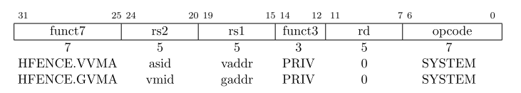

5.3 ハイパーバイザー命令¶
ハイパーバイザー拡張では、仮想マシンのロード・ストア命令と2つの特権付きfence命令が追加される。
5.3.1 ハイパーバイザー仮想マシンロードストア命令¶
ハイパーバイザー仮想マシンロードストア命令¶
ハイパーバイザー仮想マシンロードストア命令は、Mモード,
HSモードもしくはhstatus.HU=1の場合にUモードでのみ有効である。それぞれの命令はV=1であるかのように動作する;
つまり、アドレス変換・保護・エンディアンなどがまるでVSモードもしくはVUモードであるかのように動作する。hstatusのSPVPフィールドはアクセス特権レベルを制御する。明示的なメモリアクセスは、SPVP=0の場合にはVUモードとして完了し、SPVP=1の時はVSモードのように完了する。通常V=1の場合には2ステージのアドレス変換が適用され、HSレベルのsstatus.SUMビットは無視される。HSレベルのsstatus.MXRはアドレス変換の両方のステージ(VSステージとGステージ)に対して実行可能なページのみを読み込み可能とし、一方でvstatus.MXRは最初の変換(VSステージ)にのみ影響を与える。
すべてのRV32IとRV64Iのロード命令、LB, LBU, LH, LHU, LW, LWU, LD命令はそれぞれ以下の仮想マシン命令に相当する: HLV.B, HLV.BU, HLV.H, HLV.HU, HLV.W, HLV.WU, HLV.D。すべてのRV32IとRV64Iのストア命令、SB, SH, SW, SD命令はそれぞれ以下の仮想マシン命令に相当する: HSV.B, HSV.H, HSV.W, HSV.D。もちろん、HLV.WU, HVL.D, HSV.DはRV32では無効である。
HLVX.HUとHLVX.WUはHLVU.HUとHV.WUと同一であるが、アドレス変換中に実行権限が読み込み権限の代わりをすることができる。つまり、アドレス変換中に読みだされるページは実行可能でなければならないが、読み出し可能である必要はないということである。HLVX.WUはRV32で有効であるが、LWUおよびHLV.WUは有効ではないことに注意すること(RV32では、HLVX。WUはHLV.Wの一種であると考えられ、32ビットの値に対して符号拡張は行われない)。
HLVXはマシンレベルの物理メモリ保護(PMP)をオーバーライドすることはできず、PMPにより実行可能のみのメモリ領域に対してはアクセスフォルト例外が発生する。
V=1の時に仮想マシンロード・ストア命令(HLV, HLVX,
HSV)を実行しようとすると仮想命令例外が発生する。hstatus.HU=0時のUモードで同様の命令を実行しようとすると不正命令例外が発生する。
メモ：SpikeのHLV.Bの実装を確認すると、以下のようになっていた。
HLV.B
require_extension('H');
require_novirt();
require_privilege(get_field(STATE.hstatus, HSTATUS_HU) ? PRV_U : PRV_S);
WRITE_RD(MMU.guest_load_int8(RS1));
MMU.guest_load_int8というのが使用されている。mmu.hには以下のように#defineで定義がなされていた。
// load value from guest memory at aligned address; zero extend to register width
load_func(uint8, guest_load, RISCV_XLATE_VIRT)
load_func(uint16, guest_load, RISCV_XLATE_VIRT)
load_func(uint32, guest_load, RISCV_XLATE_VIRT)
load_func(uint64, guest_load, RISCV_XLATE_VIRT)
load_func(uint16, guest_load_x, RISCV_XLATE_VIRT|RISCV_XLATE_VIRT_MXR)
load_func(uint32, guest_load_x, RISCV_XLATE_VIRT|RISCV_XLATE_VIRT_MXR)
load_func()の実体はdefineであるが、そこではRISCV_XLATE_VIRTで宣言されているフラグでテーブルウォークの制御がなされているようだった。
#define load_func(type, prefix, xlate_flags) \
inline type##_t prefix##_##type(reg_t addr, bool require_alignment = false) { \
if (xlate_flags) \
flush_tlb(); \
if (unlikely(addr & (sizeof(type##_t)-1))) { \
...
target_endian<type##_t> res; \
load_slow_path(addr, sizeof(type##_t), (uint8_t*)&res, (xlate_flags)); \
if (proc) READ_MEM(addr, size); \
load_slow_path()は以下のような実装になっていた。
void mmu_t::load_slow_path(reg_t addr, reg_t len, uint8_t* bytes, uint32_t xlate_flags)
{
reg_t paddr = translate(addr, len, LOAD, xlate_flags);
translate()はxlate_flagsで挙動を変えるようだ。
reg_t mmu_t::translate(reg_t addr, reg_t len, access_type type, uint32_t xlate_flags)
{
if (!proc)
return addr;
bool mxr = get_field(proc->state.mstatus, MSTATUS_MXR);
bool virt = (proc) ? proc->state.v : false;
reg_t mode = proc->state.prv;
if (type != FETCH) {
if (!proc->state.debug_mode && get_field(proc->state.mstatus, MSTATUS_MPRV)) {
mode = get_field(proc->state.mstatus, MSTATUS_MPP);
if (get_field(proc->state.mstatus, MSTATUS_MPV))
virt = true;
}
if (!proc->state.debug_mode && (xlate_flags & RISCV_XLATE_VIRT)) {
virt = true;
mode = get_field(proc->state.hstatus, HSTATUS_SPVP);
if (type == LOAD && (xlate_flags & RISCV_XLATE_VIRT_MXR)) {
mxr = true;
}
}
}
reg_t paddr = walk(addr, type, mode, virt, mxr) | (addr & (PGSIZE-1));
if (!pmp_ok(paddr, len, type, mode))
throw_access_exception(virt, addr, type);
return paddr;
}
5.3.2 ハイパーバイザーメモリ管理フェンス命令¶

ハイパーバイザーメモリ管理フェンス命令、HFENCE.VVMAとHFENCE.GVMAはSFENCE.VMA(4.2.1節)と同様の動作をするが、HFENCE.VVMAはvsatp
CSRによって制御されるVSレベルのメモリ管理データ構造に対して適用されるところが、HFENCE.GVMAはhgatp
CSRによって制御されるVSレベルのメモリ管理データ構造に対して適用されるところが異なる。SFENCE.VMA命令は現在のsatp(V=0の場合はHSレベルの``satp``で、V=1の場合はvsatp)によって管理されるデータ構造に対し適用される。
HFENCE.VVMAはMモードもしくはHSモードに対して有効である。その効果は、一時的にVSモードに入りSFENCE.VMA命令を実行するのと同一である。HENCE.VVMAはHARTによって見ることのできるすべての当該命令実行前のすべてのメモリストアが、VSレベルのメモリ管理データ構造のそのHARTによる後続のすべての暗黙的なリード操作の前に順序付けられることが保証される：
HFENCE.VVMAの後にある命令HFENCE.VVMA実行時とhgatp.VMIDの設定が同じ場合に実行された命令
HFENCE.VVMAが実行されたときにhgatp.VMIDが異なる暗黙的な読み込みについては順序付けられる必要はない。オペランドrs1 != x0である場合、単一のゲスト仮想アドレスが指定され、オペランドrs2!=x0である場合、単一のゲストアドレス空間識別子(ASID)が指定される。
HFENCE.VVMA命令はHFENCE.VVMAが実行されたときのhgatp.VMIDによって識別される単一の仮想マシンにのみ適用される。
rs2!=x0である場合、rs2が保持しているビットの内XLEN-1:ASIDMAXは将来のための予約であり、ソフトウェアによりゼロにされているべきであり、現在の実装では無視される。さらに、ASIDLEN
<
ASIDMAXである場合はrs2に保持されているビットASIDMAX-1:ASIDLENの値は実装により無視される。
HFENCE.VVMAのより単純な実装では、rs1のゲスト仮想アドレスとrs2のゲストASID値、および –hgatp.VMIDを無視して、すべての仮想マシンのVSレベルのメモリ管理のためのグローバルフェンスを常に実行したり、すべてのメモリ管理データ構造のためのグローバルフェンスを実行したりすることができる。
mstatus.TVMとhstatus.VTVMの値のどちらも、HFENCE.VVMAに例外を発生されることはない。
HFENCE.GVMAはHSモードにおいてmstatus.TVM=0の場合か、Mモード(mstatus.TVMの値には関係ない)の場合にのみ有効である。HFENCE.GVMA命令の実行は現在実行しているHARTにより見えているそれまでのストア操作は、HFENCE.GVMAの後に続くゲスト物理メモリ管理データ構造を操作したHARTにより実行される後続の読み込み操作に対して順序付けられることが保証される。rs1!=x0ならば2ビット右シフトされた単一の物理アドレスであることを示し、rs2!=x0ならｂ、単一の仮想マシン識別子(VMID)が指定される。
トラップ発生時に
htvalに書き込まれるゲスト物理アドレスのように、rs1に指定されるゲスト物理アドレスは2ビット右にシフトされ、XLENよりも大きな値を格納する際により多くの値を格納できるようにしている。
rs2 != x0である場合、rs2が保持している値のうちXLEN-1:VMIDMAXビットの値は将来のための予約であり、ソフトウェアによりゼロが書き込まれるべきであり実装により無視される。さらに、VMIDLEN
<
VMIDMAXであるばあいは、rs2のビットの内VMIDMAX-1:VMIDLENの値は実装により無視される。
HFENCE.GVMAのよりシンプルな実装では、rs1 のゲスト物理アドレスと rs2 の VMID 値を無視して、常にすべての仮想マシンのゲスト物理メモリ管理のためのグローバルフェンス、またはすべてのメモリ管理データ構造のためのグローバルフェンスを実行することができる。
HFENCE.VVMAとHFENCE.GVMAはV=1の時に実行すると仮想命令例外を発生するが、Uモードで実行すると不正命令例外を発生する。HFENCE.GVMAをmstatus.TVM=1のHSモードで実行すると同様に不正命令例外が発生する。